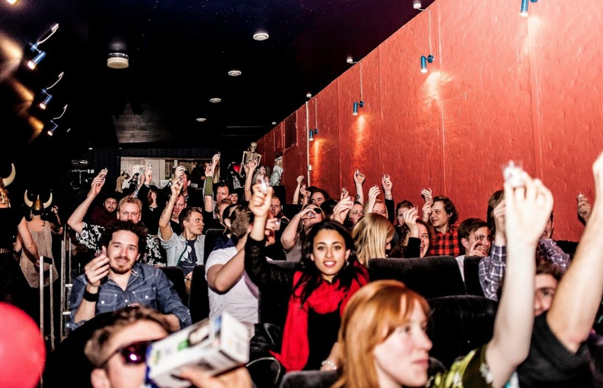
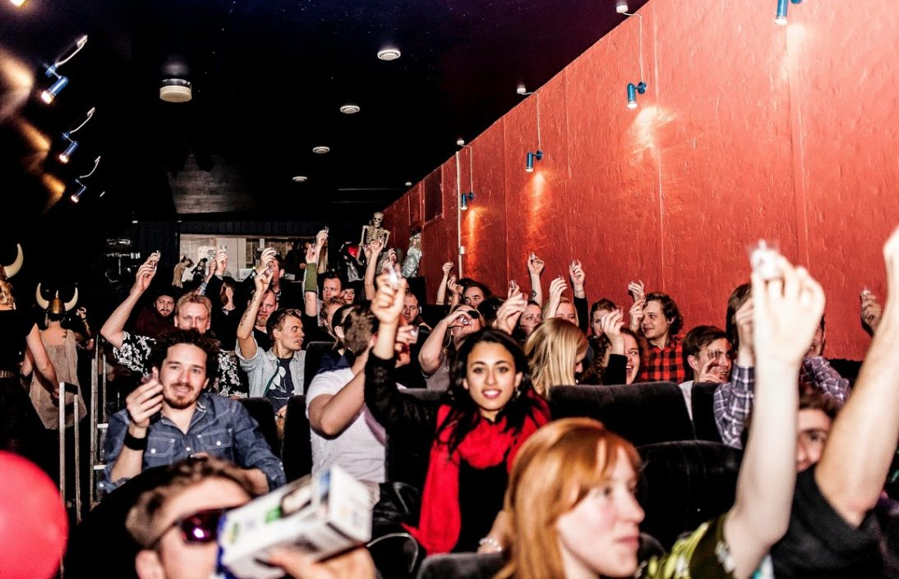

Husets Biograf
Husets Biograf drives af Foreningen Husets Biograf (FHB). Det er et almennyttigt (non-profit) kulturinitiativ baseret udelukkende på frivillig arbejdskraft. Foreningen ser det som sin fornemmeste pligt at imødekomme lokale græsrodsbevægelser, fremmede kulturer og velgørenhedsorganisationer. Yderligere danner biografen rammen om Københavns hæderkronede børnefilmklub. I Husets Biograf bliver der både vist kultklassikere, samt en hel række ukendte film. Unge filmkunstnere får ligeledes mulighed for at vise deres værker frem i Husets Biograf.
Kom og besøg os i Husets Biograf og få dyrket din indre filmnørd
I Husets Biograf gør vi en dyd ud af, at skabe unikke og sjove filmoplevelser. I den gamle biograf viser vi alt fra kultklassikere til de ”små” ukendte film indenfor bl.a. genrerne science fiktion, drama, fantasy og horror.
I biografen bliver der også afholdt de populære interaktive filmvisninger som Sing-Along, hvor man kan få lov til, at danse og skråle med til Grease. Hvis du ikke er til fællessang og dans har du også mulighed for en aften i selskab med The Dudes og fællesskål i kolde White Russians til arrangementet Movie Drink-Along, hvor kultklassikeren The Big Labowski bliver vist.
Der er selvfølgelig også rig mulighed for, at nyde den helt klassiske biograftur med sodavand, popcorn og hvor du har mulighed for at se film som fx; fantasi filmen The NeverEnding Story, The Room, som har fået sin kult status for, at være verdens dårligste film, gyseren Carrie, klassikere som ADELHEID samt mange mange flere.
Find oversigten over filmvisninger på hjemmesiden under Events.
Her kan du også finde oplysninger om, hvordan du kan købe og reservere billetter.
Så kom og lad dig dykke ned i en verden af fantastiske historie fortalt på film.
Praktisk information
Kan anvendes til: film screenings, receptioner, filmklubber etc.
Max kapacitet: 63 personer
Faciliteter i biografen: Stole/lærred/fremviser
Faciliteter i biografens foyer: Bar/dankortmaskine/borde/stole
Mulighed for catering: Nej.
Rengøring: Inkl. i lejeprisen.
Kontakt
Jack Stevenson
Mail: jack.stevenson@mail.dk
Tlf: +45 20 29 70 13
Priser og betingelser for leje
Download samlet liste over priser og betingelser her.
*Bemærk at priser er eksklusiv moms, og lejen udelukkende går til dækning af udgifter i forbindelse med vedligeholdelse af biografens udstyr.
Yderligere information
Biografen er bemandet en time før arrangementets start i de kategorier, der er beregnet til offentlige forevisninger/forevisninger med et større publikum (4 og 6 timer). Således er filmen gjort klar, caféen er åben og publikum har mulighed for at ankomme i god ro og orden. Efter forestillingen har publikum mulighed for at hygge sig en stund, hvorefter personalet sørger for rengøring samt nedlukning af tekniske faciliteter.
Hvad angår 1 og 2 timers kategorierne, er der ikke tid til publikumsmodtagelse og rengøring mv. Derfor er disse kategorier primært forbeholdt særlige arrangementer for en mindre, sluttet kreds.
Lejer har ret til at sælge billetter til offentligheden i forbindelse med 4 og 6 timers kategorierne. Dog skal en tredjedel af billetindtægten tilfalde FHB. Lejer påtager sig ethvert ansvar for fremskaffelse af filmisk materiale samt rettigheder hertil.
30 minutters brug eller derunder:
Der er IKKE mulighed for at have et publikum tilstede i denne kategori! Kategorien er beregnet til test eller gennemsyn af ganske korte produkter.
1 times brug eller derunder:
Denne kategori er beregnet til situationer, hvor der ikke skal vises film, men hvor biografen skal danne baggrund for en anden, kortvarig aktivitet, der ikke kræver forudgående og efterfølgende forberedelse. Her er der ikke mulighed for at invitere et publikum. I særlige tilfælde kan denne kategori bruges til visning af en kort film for en eller to personer – fx i studieøjemed.
2 timers brug eller derunder:
Denne kategori er beregnet til møder og lign., hvor der skal vises en kort film. Bemærk, at det ikke er muligt at benytte denne kategori, hvis man vil vise film af spillefilmslængde.
4 timers brug eller derunder:
Denne kategori egner sig til visning af film af cirka 90 minutters varighed(eller derunder). Her er der mulighed for at arrangere offentlige forevisninger med tid til modtagelse af publikum og efterfølgende afrunding.
6 timers brug eller derunder:
Denne kategori egner til større arrangementer, hvor der skal være tid til caféhygge, debat, workshop med videre. Der er frit valg, om arrangementet skal holdes i dag- eller aftentimerne.